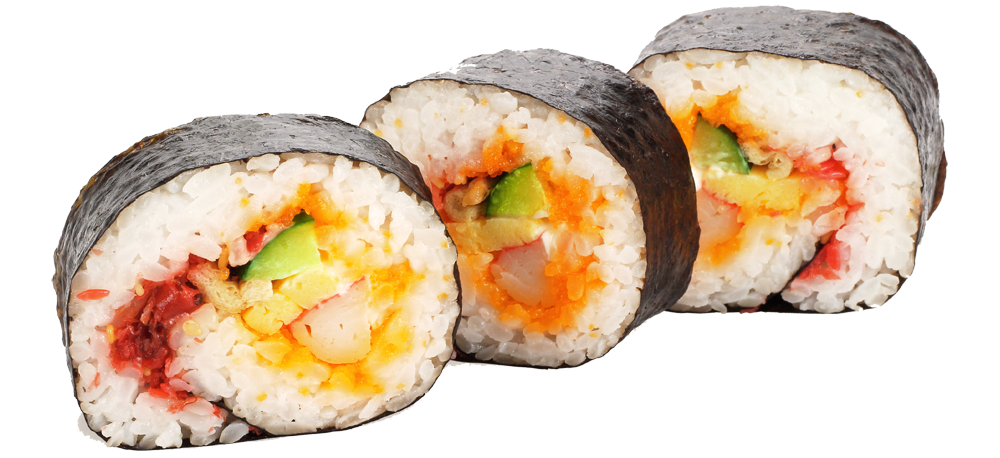

I remember connecting with people on text-only internet relay chat (IRC) for the first time, writing *whatever* I thought. To speak without a filter anonymously had not been possible til then. It was addictive. But as my IRC chats and Geocities web site turned into Facebook, I see unfiltered thoughts bringing us closer -- and driving us apart, too. So, I ask: How can technology connect humans better, online and in person?
A caring, connected world.
My mission is now about creating a caring, global community assisted by technology and human wisdom.
Hobbies. "Just about about any rigorous training changes how you see the world."
When I was sixteen, I told my parents that I would apply to music school in NYC. This was because of two amazing summers I spent at a classical music festival in the south, living like a piano conservatory student.
I didn't end up becoming a classical musician. But I realized that what inspired me was hearing fellow musicians in concert, then walking out into the night and feeling the sky move over the earth. The daily things would fall away, as I was moved by the rhythm of the universe and the people who had reached for it during that hour or so.
Live performance
While my young concert pianist days are over, I'm studying tabla with the son of a renown master. I'm always down to see a show, from SFJazzCenter, San Francisco Symphony to Revolution Cafe.
I have also organized world-class live events like TEDxBushwick.
Painting
I am completing a series of 50 paintings. This is painting #1.
She is the light When ego is quiet Of unbearable compassion | She is the sound Of everyone around Of everything that is still | She is the light When ego is quiet Of unbearable compassion | She is she.
Tech
My path has taken me from psychology to technology, with the heart of an artist. It is super fun to build stuff!
I'm learning data science at The Data Incubator and web development and hardware at MEDA's Mission Techies program. Both courses are a chance to meet people I might otherwise have never met. MEDA (Mission Economic Development Agency) is a nonprofit in SF with smart, caring counselors who help the community with job searches, business, housing, and finances. It's an incredible place that feels like home.
While working alone is very meaningful - with other people, it's a new, amazing level of meaning. And humbling. I suffered a brain injury several years ago that causes me to skip over and miss characters as I look and type. Helps to have people look and fix my errors!
What's next: Writing and Travel
In whatever I do, I strive to see and know the larger picture. My Medium blog, Wordpress blog and YouTube are about entrepreneurship, politics, and life. I have lots to write about as a global community builder. My digital health startup Vytality Health serves families separated by an ocean; so, I am traveling to learn about them. And, I love having an excuse to visit some amazing places:
Manila, Philippines
Auckland, Australia
Shanghai, China
Calcutta, India
Dubai, UAE
Cairo, Egypt
Seoul, Korea
Rejkavic, Iceland
Geneva, Switzerland
London, England

I'm hungry
Not just for life; for good food, too. Yet, I hate preparing food. As an organizer at Burning Man, I cried in the kitchen when asked to make meals. I cried and made grilled cheese sandwiches, while everyone smiled eating them. Anyone who loves me will make these for me:
Sushi
Ayurvedic meals of any kind
Baked potatoes
Filipino food that's vegetarian
Salads that taste good
The Impossible Burger (vegetarian looks like real meat - it even bleeds!)